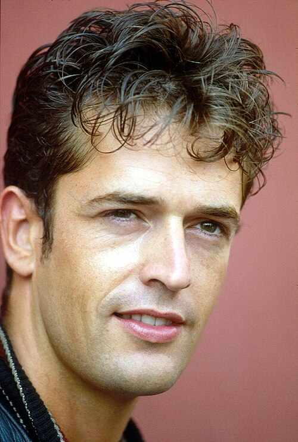

Dylan Dog è un personaggio dei fumetti creato da Tiziano Sclavi ed elaborato graficamente dai fumettisti Claudio Villa e Angelo Stano, protagonista dell'omonima serie Dylan Dog di genere horror edita dal 1986 dalla Daim Press, che poi divenne la Sergio Bonelli Editore. La serie ha raggiunto presto un successo tale da renderlo uno dei fumetti italiani più venduti, oggetto di numerose ristampe e considerato un cult del fumetto italiano. Gli albi della serie a fumetti sono tradotti e pubblicati anche all'estero. Al personaggio è ispirato un film omonimo del 2010.
La gestazione del personaggio iniziò nel 1985 quando Sergio Bonelli, proprietario della casa editrice, e Decio Canzio, suo direttore generale, decisero di tornare a occuparsi di fumetti tradizionali dopo la chiusura dell'esperienza dei fumetti d'autore della "Bonelli-Dargaud". Sclavi propose quindi un fumetto horror, provvisoriamente chiamato "Dylan Dog". Il nome derivava da Dylan Thomas, mentre il cognome dal titolo di un libro di Mickey Spillane che Sclavi vide in una libreria (Dog figlio di) ed era il nome provvisorio che dava ai suoi personaggi in fase di creazione per poi cambiarlo una volta completato; l'aveva usato anche come titolo di una breve storia della fine degli anni settanta disegnata da Lorenzo Mattotti.
Nella prima bozza la nuova serie horror della Bonelli avrebbe dovuto essere ambientata in America, ispirata al genere hard boiled e Dylan avrebbe dovuto essere un detective solitario, senza spalla comica. Si decise di ambientarlo a Londra discutendone con Bonelli perché in America, a New York, c'era già Martin Mystère e poi l'Inghilterra sembrava più adatta per l'horror per via delle sue antiche tradizioni. Per non rendere la serie troppo incentrata sulle indagini si decise di inserire una spalla comica. La serie venne quindi ambientata nella Londra contemporanea e con protagonista un giovane investigatore "dell'incubo" (l'idea ha un precedente in John Silence, personaggio dello scrittore inglese Algernon Blackwood) dall'età di una trentina d'anni e, per scelta di Sclavi, con le fattezze ispirate a quelle dell'attore Rupert Everett. L'assistente di Dog viene chiamato semplicemente Groucho ed è sosia dell'attore Groucho Marx, oltre ad avere la caratteristica di fare continuamente battute o raccontare barzellette in qualsiasi situazione.

Di Gorup de Besanez - Opera propria, CC BY-SA 3.0, https://commons.wikimedia.org/w/index.php?curid=32835418
Graficamente il personaggio fu creato da Claudio Villa e Sclavi in proposito racconta: A fine settembre del 1986 uscì in edicola il primo numero di Dylan Dog ma l'esordio non fu dei migliori tanto che, citando le parole di Decio Canzio, all'epoca direttore responsabile della testata: Infatti nel giro di pochi anni Dylan Dog diventa un best seller che porta Sclavi nel 1990 a vincere il premio Yellow Kid come miglior autore. Il 1991 è probabilmente il momento di maggior successo per la serie che, con il n. 69 "Caccia alle streghe", arriva a superare Tex per numero di copie vendute.
L'ufficio e l'abitazione del personaggio sono poste al n. 7 di Craven Road a Londra (il nome è un omaggio al regista Wes Craven), hanno un campanello che urla invece di suonare e un singolare quanto tetro arredamento composto da modelli di mostri a grandezza naturale; su una parete dello studio è inoltre appeso il poster del Rocky Horror Picture Show. Nel n. 300 si scopre tra l’altro che la casa è la stessa dove, 300 anni fa, Dylan neonato partì assieme ai genitori con il vascello alla ricerca dell'immortalità.
Il negozio Safarà (dall'arabo: سافر [sāfara] viaggiare), gestito da un sinistro personaggio di nome Hamlin. Nonostante ricorra in molti albi e vi abbia comprato diversi oggetti, Dylan non ricorda mai di esserci stato; non di rado infatti, quando Dylan ne esce dopo aver fatto acquisti, l'intero negozio scompare lasciando al suo posto un muro di mattoni.
Moonlight è una località marittima inglese, dove Dylan adolescente trascorse la sua prima vacanza da solo. Qui conobbe il suo primo amore (Marina Kimball), trovò quella che sarebbe stata la sua pistola, decise che "da grande" avrebbe fatto l'indagatore dell'incubo, dichiarò che la sua auto sarebbe stata il Maggiolone cabriolet e per la prima volta entrò in contatto con il galeone. Dylan Dog tornerà a Moonlight altre due volte: quando dopo circa venti anni accompagna a casa il fantasma di Marina e successivamente in occasione di un'indagine.
Inverary è una città immaginaria nella campagna londinese, dove i giorni si susseguono sempre uguali all'infinito, costringendo i cittadini a vivere in una zona tra la vita e la morte creata dal dottor Hicks, la cosiddetta zona del crepuscolo, e a rivivere per sempre lo stesso giorno. Compare nella "Trilogia del Crepuscolo" costituita dagli albi n. 7 La zona del crepuscolo, n. 57 Ritorno al crepuscolo e n. 238 Gli eredi del Crepuscolo.
La vita del personaggio viene raccontata nel corso della serie attraverso particolari del suo passato che vengono svelati in particolare nei seguenti numeri: n. 1 (L'alba dei morti viventi), n. 7 (La zona del crepuscolo), n. 25 (Morgana), n. 43 (Storia di Nessuno), n. 74 (Il lungo addio), n. 100 (La storia di Dylan Dog), n. 121 (Finché morte non vi separi), n. 151 (Il lago nel cielo), n. 200 (Il numero duecento), n. 241 (Xabaras!), n. 242 (In nome del padre), n. 300 (Ritratto di famiglia) e nel volume fuori serie Dylan Dog & Martin Mystère Ultima fermata: l'incubo!. Tiziano Sclavi ha però ammesso di non aver amato il fatto di essere stato costretto a raccontare dettagliatamente passato e origini del suo personaggio, ma di averlo dovuto fare su richiesta dell'editore; l'autore avrebbe infatti voluto lasciare le origini di Dylan Dog avvolte nel mistero e, in un certo senso, nel n. 100 in cui vengono svelate le origini antiche del personaggio, ha lasciato intendere che possa essersi trattato solo di un sogno fatto da Groucho.
Nel 1686 un galeone inglese naviga capitanato da Dylan, uno scienziato e alchimista londinese, alla ricerca dell'ingrediente mancante per il siero dell'immortalità. A differenza dei viaggi precedenti, in questo è accompagnato dalla moglie Morgana e dal figlio Dylan jr, per evitare che il piccolo soffra eccessivamente della mancanza del padre. Il bambino, tra l'altro, ha già cominciato a sviluppare, a causa di ciò, una sorta di complesso di Edipo. Grazie alla cattura di un mollusco, Dylan riesce a completare il siero insieme all'antidoto per evitare la trasformazione in zombi. Morgana sperimenta il siero per prima per far sì che suo marito possa eventualmente intervenire se non dovesse funzionare. Il siero e l'antidoto sembrano fare effetto e allora Dylan sr. si inietta il siero ma non l'antidoto a causa dell'ammutinamento dell'equipaggio che uccide il capitano che, proprio a causa al siero, risorge sotto forma di zombi e massacra l'equipaggio. Morgana riesce a iniettare l'antidoto al marito ma è ormai troppo tardi e l'uomo recupera solo in parte la sua coscienza. Nel frattempo, i marinai risorgono come zombi. Interviene il mollusco marino che si rivela essere un demone acquatico (che si scoprirà poi essere una delle incarnazioni del gatto magico Cagliostro) che punisce le ambizioni dello scienziato sdoppiandolo: una parte viene condannata a vivere per 666 anni in esilio su un asteroide mentre l'altra diventa un'incarnazione del demone Abraxas e rimane sulla Terra. Con il nome di Xabaras (anagramma di Abraxas), riesce a contrastare la rivolta degli zombi e a ricondurre il galeone a Londra dove affonda, abbandonando poi Morgana e il figlio per poter dedicarsi alle sue ricerche. La donna, oramai immortale, viene imprigionata e messa a dormire in eterno in una bara di vetro dentro il galeone, mentre il bambino viene affidato a un orfanotrofio. Qui il piccolo Dylan riceve la visita dell'entità marina che aveva sdoppiato il padre e lo porta avanti nel tempo nello stesso orfanotrofio ma intorno al 1956. Qui viene adottato dalla famiglia Dog, il giovane Dylan e la moglie, giunti sul posto per condurre un'inchiesta su possibili maltrattamenti inflitti ai bambini. Xabaras, pentitosi di aver abbandonato il figlio, si reca all'orfanotrofio per riprenderselo, ma scopre che è misteriosamente scomparso. Tali sono il desiderio e la necessità di ritrovarlo che Cagliostro decide di trasportare anche lui nella Londra del XX secolo.
Il piccolo Dylan, però, ora adottato dalla famiglia Dog, ha rimosso dai ricordi Xabaras, che cerca senza successo di rintracciare il figlio all'unico indirizzo possibile, quello del nonno adottivo di Dylan, il quale, notando qualcosa di malvagio in Xabaras, mette in guardia il figlio, che rimane lontano da Londra, a Crossgate, dove Dylan cresce ignaro dell'esistenza del vero padre. Da bambino ha una cotta per una sua compagna di scuola, Spring Shorend, e intorno ai sedici anni trascorre la sua prima vacanza da solo a Moonlight, dove conosce il suo primo amore, Marina Kimball. In tale occasione, trova la pistola modello Bodeo mod. 1889 che diverrà la sua arma. Il giovane Dylan viene messo al corrente dal suo padre adottivo dell'esistenza di Xabaras, che per loro è solo un pazzo che crede di essere il vero padre di Dylan.
Verso i venti anni si trasferisce a Londra per diventare agente di Scotland Yard e nel 1978 conosce Martin Mystère e si innamora di Alison Dowell. La ragazza è anche sacerdotessa di una setta satanica che tenterà di uccidere Dylan. Martin lo salva causando però la morte di Alison.
A Scotland Yard è agli ordini dell'ispettore Bloch, il quale lo prende particolarmente a cuore. Dylan incontra Groucho e si innamora di Lillie Connolly, militante dell'IRA che poi viene arrestata come terrorista. Durante il processo Dylan testimonia a difesa di Lillie a causa dei trattamenti subiti in carcere. Lillie viene condannata a morte ma morirà a seguito di uno sciopero della fame. Per elaborare il lutto, Dylan si vestirà sempre come in occasione del primo e dell'ultimo incontro con Lillie: giacca nera, camicia rossa, jeans Levi's e scarpe Clarks (peraltro già in passato si era vestito così, come ad esempio all'epoca della sua storia con Marina, oppure nel 1978 quando conobbe Martin Mystère). La morte di Lillie getta Dylan nello sconforto, al punto di fargli lasciare Scotland Yard (mantenendo però illecitamente il suo tesserino) e diventando un alcolista. Dylan riesce grazie a Bloch a ottenere la licenza di investigatore privato, stabilendosi in un appartamento affittato al n. 7 di Craven Road. Durante la sua prima indagine incontra nuovamente Groucho e lo prende come assistente. Per il primo caso risolto riceve come pagamento il Maggiolone. Groucho gli regalerà in seguito il clarinetto, il diario con la penna d'oca e il campanello urlante, acquistandoli presso il negozio di antiquariato Safarà. Presso lo stesso negozio Dylan aveva già acquistato il modellino di galeone. Il figlio di Bloch, Virgil, compie una rapina finendo ucciso. L'episodio finisce per rinforzare l'amore paterno di Bloch nei confronti di Dylan contribuendo a liberare definitivamente Dylan dall'alcolismo.
Dal 1986, anno di esordio della serie a fumetti, il personaggio si dedica definitivamente alla professione di "indagatore dell'incubo". Il personaggio, così come i suoi comprimari, non invecchia e la serie di avventure prosegue senza mutamenti di età dei protagonisti. Nel primo numero della serie Dylan si scontra per la prima volta con Xabaras senza sapere che è suo padre. Per il ventennale della serie, nel 2006, si consuma la resa dei conti fra i due e Dylan scopre di essere suo figlio e di essere nato nel XVII secolo. Nel frattempo Xabaras, convinto di aver perfezionato il siero dell'immortalità, lo sperimenta su sé stesso, ma il siero si rivela imperfetto in quanto dona sì l'immortalità ma la vita eterna è vuota, priva di sentimenti e di sensazioni. Xabaras, resosi conto che questo è il suo definitivo fallimento, si suicida. Il gatto Cagliostro cancella dalla memoria di Dylan quanto accaduto facendolo tornare alla sua vita di indagatore, mentre il corpo di Xabaras viene trasferito in un'altra dimensione, dalla quale tornerà solo quando sarà il momento di ricongiungersi con l'altra metà e saranno trascorsi i 666 anni di esilio. Allora la metà in esilio tornerà sulla Terra, Dylan finirà il modellino di galeone e ciò gli riporterà alla mente tutte le vicende passate. La famiglia si ritroverà nei sotterranei di Londra sul galeone con Morgana risvegliata dal lungo sonno nella sua bara di vetro e le due parti del padre che si riuniranno. Dylan abbandonerà definitivamente la professione di indagatore dell'incubo e il suo appartamento di Craven Road per andare a vivere forse con Groucho una nuova vita finalmente libera dal mistero dei suoi genitori potendo d'ora in poi avere solo sogni e mai più incubi.
Nel 2014 avvengono significativi cambiamenti nella vita dell'indagatore dell'incubo (causa dell'operazione di rilancio editoriale del personaggio voluta da Sclavi e affidata a Roberto Recchioni e definita "Fase 2"): il primo fra tutti è il pensionamento dell'ispettore Bloch e il suo trasferimento in una campagna inglese, che fa perdere a Dylan un importante aiuto nella polizia, visto che il suo successore, l'ispettore Carpenter, lo considera un ciarlatano e fa tutto ciò che è in suo potere per mettergli i bastoni tra le ruote. L'unica ad essere un po' più aperta nei confronti di Dylan è la sergente Rania Rakim, per il quale l'uomo comincia a maturare dei sentimenti, salvandosi la vita reciprocamente in più di un'occasione e aiutandosi a vicenda.
Dylan inoltre è costretto ad aprirsi di più alla tecnologia, prendendo uno smartphone chiamato Ghost 9000, utilizzato perlopiù da Groucho (con cui instaura un rapporto molto simile al flirt), a causa anche del nuovo antagonista introdotto: l'industriale John Ghost, un uomo apatico, senza alcun scrupolo e a capo di un'agenzia tecnologica, la Ghost Enterprise, andando nettamente in contrasto con Dylan, da sempre contrario o riluttante nei confronti delle nuove tecnologie, e contro il quale nulla può, a causa della sua posizione di potere nel mondo, e per le sue assurde e indecifrabili macchinazioni che lo fanno stare sempre un passo avanti. Più avanti nella serie Ghost diventa la mente occulta dietro gli orrori e le situazioni che Dylan si trova ad affrontare, facendo addirittura distruggere Moonlight, per via di uno "snodo ferroviario per il multiverso" in cui c'è il galeone fantasma salpato centinaia di anni prima con a bordo Xabaras, Morgana ed il piccolo Dylan Dog che continua a mostrarsi all'uomo, rivelando che John Ghost vuole Dylan vivo a tutti i costi per un suo futuro "sacrificio". Nonostante tutto, Ghost non riuscirà a distruggere il galeone fantasma, ma solo a rallentarlo, dimostrando che anche lui ha dei limiti, nonostante le sue risorse. Riuscirà comunque a guadagnare quel tempo sufficiente per attuare il suo piano contro Dylan.
Questo sacrificio diverrà più chiaro nel "Ciclo della meteora", ovvero l'ultimo ciclo di avventure di Dylan Dog, che si trova ad affrontare situazioni legate nientedimeno che all'Apocalisse: dopo essere stato trasformato in un simbolo deviato dai media di John Ghost, Dylan scopre da questi che una meteora si sta avvicinando minacciosamente alla Terra e che dopo un anno sarà completamente distrutta, a meno che Dylan non diventi simbolo di speranza per il mondo e accetti un ultimo sacrificio per salvare il mondo. Affrontando la follia umana scaturita durante la fine del mondo ed eliminando gli ultimi nemici rimasti in vita, la storia terminerà con John Ghost che offre a Dylan Dog una via di uscita per salvare Londra e probabilmente la razza umana tutta dalla meteora: per salvare il mondo, bisognerà mutarlo profondamente dalle sue radici. Per questo motivo l'industriale rivela all'indagatore che è stato lui, con la sua influenza, a fare andare in pensione Bloch e a mettere Tyron al suo posto, così come Groucho è diventato un suo informatore, e di avere contribuito a manipolare e modificare molte altre cose avvenute nei numeri precedenti. John Ghost voleva eliminare tutte le cose ritenute superflue affinché Dylan fosse pronto. L'ultima prova per completare l'opera di John contempla che Dylan Dog, scapolo impenitente e nuovo simbolo della speranza, si sposi, venendo però abbandonato all'altare dalla sposa in mondovisione. Dylan così accetterà di "sposare" simbolicamente l'unica persona che gli è sempre stata accanto e lo ha aiutato fino alla fine: Groucho. Dopo un "matrimonio" celebrato con amici cari e officiato da Ghost, Dylan capirà che non doveva sacrificarsi lui, ma la persona a lui più cara, quando Groucho morirà per mano di uno dei suoi nemici sopravvissuti. John rivela infine che il momento cruciale di Dylan per cambiare tutto e riconfigurare l'universo è infine giunto, consegnando una pistola all'indagatore dell'incubo, chiedendo infine che gli spari: solo così tutto potrà essere cambiato. Dylan tuttavia rifiuta e non intende fare quest'ultima cosa. Ciò fa infuriare tremendamente John Ghost che esclama furibondo che Dylan ha rovinato tutto. Con sorpresa però Dylan cambia idea e spara un colpo alle spalle di John Ghost ferendolo mortalmente e vendicandosi di tutte le sue macchinazioni. John si accascia ai piedi della sua segretaria affermando che era questo ciò che voleva da Dylan Dog prima che arrivasse la fine. Dylan e i suoi amici e alleati si tengono per mano e affrontano la fine, non prima che Dylan se ne esca con la frase: «Ci vediamo dall'altra parte».
Termina così l'universo principale di Dylan Dog, dando inizio ai primi eventi che porteranno a una nuova riconfigurazione cosmica.
Nel numero 400 un Dylan senza memoria viaggia a bordo di un veliero identico al suo modellino, con il suo tuttofare Groucho anch'egli affetto da amnesia, viaggiando per isole che sono ciò che rimane del mondo e affrontando mostri e creature simili a ciò che aveva affrontato finora, in una metanarrazione che termina con l'incontro/scontro con il "vero" padre di Dylan, Tiziano Sclavi, in una serie di sequenze che ricordano Cuore di tenebra di Joseph Conrad e Apocalypse Now di Francis Ford Coppola e che culminano nella morte e nella trasformazione di Sclavi in una stella, ma al tempo stesso, porta tutto a una nuova riconfigurazione cosmica. L'universo si rinnova e ritrova il proprio equilibrio. Le ultime due pagine mostrano un Dylan trasandato pronto a ricominciare la sua professione di Indagatore dell'Incubo con un nuovo assistente al suo fianco.
Nel numero 401 viene mostrato il nuovo universo nato dopo la saga della meteora; qui il protagonista ha una folta barba e baffi, e assieme al suo look classico quando esce indossa un'enorme livrea scura; è molto più aperto alla tecnologia in quanto ha uno smartphone e un tablet e, a differenza dell'originale, è un assiduo bevitore e fumatore occasionale.
Vengono inoltre modificati i rapporti tra i personaggi: Dylan Dog diventa figlio adottivo di Bloch, passato da ispettore a sovrintendente, ed è inoltre l'ex marito della sergente Rania Rakim, la quale ha tradito e poi lasciato Dylan per intraprendere una relazione con l'ispettore Tyron Carpenter. È inoltre presente una nuova spalla, Gnaghi, personaggio ideato da Sclavi per il romanzo Dellamorte Dellamore (nel cui omonimo film il protagonista è interpretato da Rupert Everett, sulle cui fattezze sono ricalcate quelle di Dylan Dog) che si esprime solo con il verso «Gna» (che Dylan traduce in frasi di senso compiuto, capendo cosa voglia dire) e che viene qui ripreso in sostituzione di Groucho, morto nell'albo n. 400.
È proprio con la storia di Francesco Dellamorte che si intreccia il nuovo passato di Dylan Dog, come spiegato nel n. 401 L'alba nera e nel 402 Il tramonto rosso: abbandonato e cresciuto in un orfanotrofio, dove tra l'altro gli era stato dato il nome, Dylan ha passato la giovinezza a fare il teppista e il ladruncolo con una banda (i Bloody Hell, apparsi già nell'universo originale nel numero 364 Gli anni selvaggi), fino a che Bloch, all'epoca ispettore e che ogni tanto lo pizzicava, decise di adottarlo, sebbene lui continuasse a combinare guai. Dopo un non precisato evento, Dylan mise la testa a posto e seguì le orme del padre putativo entrando in polizia. A Scotland Yard conobbe Tyron Carpenter e Rania Rakim, con la quale intrecciò una relazione e che sposò (sebbene lei lo tradisse con Carpenter). Dopo circa due settimane di matrimonio Dylan conobbe la terrorista Lillie Connolly, della quale si innamorò e che frequentò, fino a che lei non fu arrestata e morì in carcere per le sue idee.
L'evento sconvolse profondamente Dylan, che per un periodo pensò addirittura al suicidio, decidendo poi di abbandonare la polizia e Rania e di adattarsi alla morte, andando a lavorare come becchino nel cimitero di Undead, vicino a Inverness, Scozia, dove conobbe Gnaghi, sperando di condurre un'esistenza tranquilla.
Poco tempo dopo, però, il cimitero di Undead fu colpito da un'epidemia di Ritornanti, ossia morti che dopo sette giorni dalla sepoltura si risvegliavano e si tramutavano in zombi, potendo morire di nuovo solo se colpiti con una pallottola in testa o se gli veniva spaccato il cervello in altri modi, costringendo Dylan e Gnaghi a ri-ucciderli e ri-seppellirli. Fu durante una delle notti di "pulizia" del cimitero che Dylan ebbe una visione della Morte, la quale volle "assumerlo" per indagare sulla piaga dei non-morti e su altri orrori che si sarebbero verificati a Londra, suggerendo anche il futuro appellativo di Indagatore dell'Incubo all'uomo. Questi accettò, a patto che, come compenso, potesse ottenere di passare un giorno con la sua amata Lillie. Dopo varie contrattazioni, la Morte gli concesse di passare la notte stessa con la donna, siglando così il loro accordo e facendo passare a Dylan un'ultima notte di passione con Lillie. Dopodiché Dylan partì per Londra con Gnaghi, per iniziare la sua nuova professione di detective del paranormale, grazie alla licenza concessagli da Bloch.
Nel primo episodio, il n. 401 (riadattamento di L'alba dei morti viventi, primo numero della serie) Dylan assieme a Gnaghi indaga, per conto di Sybil Browning, sulla morte del defunto marito di lei, John, il quale era tornato in preda forti dolori a casa dopo un viaggio di lavoro e con un morso sul petto, morendo e resucitando poco dopo, costringendo la donna a riucciderlo e finendo per essere accusata di uxoricidio. Dylan, a causa dei suoi trascorsi con i ritornanti, si reca con la donna e Gnaghi all'obitorio della polizia sul suo classico Maggiolone bianco, scoprendo con orrore che la piaga si è diffusa anche lì, facendo resuscitare tutti i morti presenti. Sul posto giungono anche Carpenter e Rania a indagare per conto di Bloch, loro superiore, scoprendo la presenza di Dylan e dei non-morti. Seppur all'inizio scettici, i due sono costretti ad aiutare il loro ex-collega ad affrontare gli zombi e eliminarli, mentre Xabaras, la nemesi di Dylan, appare e dà fuoco all'edificio. Seppure con l'obitorio in fiamme, Dylan e il suo gruppo riescono a fuggire e impedire che la piaga si diffonda in città sparando agli ultimi zombi rimasti.
Dopo essere stati trattenuti e poi rilasciati in mancanza di prove, Dylan, Sybil e Gnaghi si recano ad Undead dopo aver scoperto che John si era recato lì per lavoro prima di contrarre la malattia, giungendo troppo tardi, in quanto ormai tutti i cittadini sono morti viventi. Scappando, il trio si rifugia nel cimitero, ora sicuro dopo l'operato di Dylan e, nella vecchia casa, l'Indagatore dell'incubo scopre che qualcuno c'era stato ultimamente, trovando poi una botola che porta alle catacombe e ad un lago sotterraneo dove nel mezzo c'è un enorme galeone, in una scena identica al numero 100. Qui vengono accolti da Nessuno, un uomo che lavora per conto di Xabaras e li porta al suo cospetto sulla nave. Il dottore rivela di essere a conoscenza del fatto che quello in cui si trova è un universo alternativo, spiegando a Dylan come esistano infinite versioni di loro due in conflitto, e che ogni volta i due arrivano alla resa dei conti, come in questo caso. Grazie alla sua conoscenza degli altri universi e degli eventi, anticipa le mosse di Dylan e lo rende inoffensivo assieme ai suoi amici, spiegandogli come il suo intento sia creare degli esseri eterni ma privi di individualità, essendo disgustato dal mondo moderno, ma viene sconfitto di nuovo dallo stesso trucco della valigetta esplosiva dove Dylan conservava il clarinetto, aperto però da Nessuno, che ha riacquisito coscienza ribellandosi al suo signore. Il galeone esplode ma Dylan e i suoi sopravvivono, non prima che l'eco della voce di Xabaras intimi all'indagatore che si rivedranno ancora. Ritornati a Londra, Sybil scopre di essere infetta e, dopo essersi trasformata, viene uccisa da Dylan, il quale comunica a Gnaghi che l'incubo è appena iniziato.
A seguito degli avvenimenti del ciclo 666, Dylan ritorna al suo look classico, decidendo di tagliarsi barba e baffi e smettendo di bere e fumare. Inoltre, a seguito della morte di Gnaghi, decide di assumere Groucho, appena conosciuto, come suo assistente. In questo periodo l'indagatore ha continui scontri con la sua ex moglie, il sergente Rania Rakim, e con l'ispettore Carpenter. Ha inoltre soventi attriti con suo padre, il sovrintendente Bloch.
Con la trilogia iniziata con l'albo n. 435 e proseguita coi successivi due, la serie torna allo status quo precedente al numero 337, di conseguenza la biografia del personaggio e dei suoi comprimari ritorna quella pre Fase 2. In questo trittico Rania e Carpenter vengono uccisi, John Ghost sparisce nel nulla, Bloch torna ispettore. Dylan Dog per uno sfasamento spazio temporale non ricorderà nulla di questi avvenimenti, come non li avesse mai vissuti. L'unica variazione rispetto al passato è la modifica dell'ambientazione delle storie, inserita nell'era moderna.
Nella sua storia editoriale Dylan Dog è stato protagonista di diversi crossover e team-up che hanno coinvolto personaggi di altre serie fumettistiche, Bonelli e non. Ad esempio nel numero 12 del Dylan Dog Color Fest sono presenti quattro storie, ognuna comprensiva di altrettanti team-up, ovvero con Mister No, Martin Mystère, Nathan Never e Napoleone. Fra i vari personaggi incontrati nel corso degli anni si ricordano:
Nelle storie del personaggio sono presenti citazioni più o meno palesi di altre opere a fumetti, letterarie o cinematografiche. Già nel primo numero si trovano riferimenti a film horror anni settanta-ottanta come La notte dei morti viventi e Zombi di Romero e Un lupo mannaro americano a Londra di Landis. Inoltre l'aspetto stesso del protagonista è dichiaratamente ispirato all'attore Rupert Everett e la frase con la quale si presenta alla prima cliente («Mi chiamo Dog, Dylan Dog») è un ironico riferimento a James Bond. Alcune storie poi traggono spunto da un luogo o una situazione celebre per poi sviluppare una trama differente, come per esempio nel n. 3 (Le notti della luna piena) in cui ambientazione e alcuni personaggi sono citazioni di Suspiria di Dario Argento. Omaggi al cinema di Argento compaiono anche nel n. 5 (Gli uccisori), dove il regista compare in primo piano tra la folla, o nel n. 26 (Dopo mezzanotte) dove un punk passa a Dylan una lattina di Coca-Cola piena di cocaina da sniffare dalla cannuccia, proprio come facevano i punk di Dèmoni. Psyco di Alfred Hitchcock è citato nel n. 20 (Dal profondo) con il Bates Motel e nel n. 243 (L'assassino è tra noi) con la sequenza dell'omicidio sotto la doccia. Altre esplicite citazioni compaiono nel n. 33 (Jekyll!), dove si richiama Lo strano caso del dottor Jekyll e del signor Hyde e che, insieme alla poesia Il Corvo di Poe, è fonte di ispirazione per una trama originale. Negli albi n. 64 e n. 65 ci sono chiare citazioni dal famoso telefilm I segreti di Twin Peaks. Nel n. 62 (I vampiri) luoghi, personaggi e nomi all'inizio della storia sono una citazione di Zombi di Romero, ma poi la trama se ne discosta in maniera originale. Anche il n. 67 (L'uomo che visse due volte), nonostante il titolo possa richiamare il film di Hitchcock, è in realtà un omaggio a Il fu Mattia Pascal di Luigi Pirandello, in quanto il cliente di turno si chiama Matthew Pascal e il suo alter ego è Adrian Mehis. Nel n. 40 (Accadde domani) Groucho, venuto in possesso di un giornale che riportava le notizie del giorno dopo (riprendendo la trama del film Avvenne domani), telefona al suo allibratore che mostra le fattezze di Chico Marx e il nome di uno dei cavalli su cui Groucho scommette è Duck soap, altro film dei Fratelli Marx.
Anche la musica è fonte di ispirazione: sono presenti citazioni a Fabrizio De André nel n. 270 Il re delle mosche, dove c'è una palese riferimento alla canzone Un chimico, nel n. 250 Ascensore per l'inferno viene citata Sogno numero 2; inoltre nel n. 19 Memorie dall'invisibile, in cui una vecchia nana termina la sua frase con le ultime parole di Un giudice sulla reale statura di Dio e in cui Dylan dona gli ultimi versi di Giugno '73 a una sua fidanzata. Nel n. 31 il dottore cita Un medico.
Dal 1991 in poi si contano almeno una dozzina di trasposizioni cinematografiche di Dylan Dog realizzate da amatori.
Role: book_character
Author: t_sclavi
Other titles: The Erection Set (en)
Author: m_spillane
Release Date: 1973
Other titles: The Late Mattia Pascal (en)
Author: l_pirandello
Other titles: Dawn of the Living Dead (en)
Albo nr.: 1
Credits:
t_sclavia_stanoc_villaRelease Date: 01/10/1986
Albo nr.: 3
Credits:
t_sclavic_villaRelease Date: 01/11/1986
Albo nr.: 67
Credits:
t_sclavia_stanoRelease Date: 01/04/1992
Other titles: Zombi (it)
Credits:
g_romeroRelease Date: 1978
Credits:
d_argentoRelease Date: 1977
Other titles: Un Lupo Mannaro Americano a Londra (it)
Credits:
j_landisRelease Date: 1981
Credits:
r_everettRelease Date: 1994
Author: t_sclavi
Release Date: 1991
| Subject (Active) | Property (Name) | Object (Passive) |
|---|---|---|
| #d_dog | rdf:type | cbo:Character |
| #d_dog | rdf:type | dbo:FictionalCharacter |
| #groucho | rdf:type | cbo:Character |
| #t_sclavi | rdf:type | crm:E21_Person |
| #a_stano | rdf:type | crm:E21_Person |
| #c_villa | rdf:type | crm:E21_Person |
| #r_everett | rdf:type | crm:E21_Person |
| #g_marx | rdf:type | crm:E21_Person |
| #dm_thomas | rdf:type | crm:E21_Person |
| #m_spillane | rdf:type | crm:E21_Person |
| #g_romero | rdf:type | crm:E21_Person |
| #j_landis | rdf:type | crm:E21_Person |
| #d_argento | rdf:type | crm:E21_Person |
| #l_pirandello | rdf:type | crm:E21_Person |
| #w_craven | rdf:type | crm:E21_Person |
| #sb_editore | rdf:type | crm:E74_Group |
| #dd_comic_series | rdf:type | cbo:Series |
| #craven_road_7 | rdf:type | cbo:Location |
| #london | rdf:type | cbo:Location |
| #dd_nr1 | rdf:type | dd:Albo |
| #dd_nr3 | rdf:type | dd:Albo |
| #dd_nr67 | rdf:type | dd:Albo |
| #dawn_of_the_dead | rdf:type | dbo:Film |
| #suspiria | rdf:type | dbo:Film |
| #american_werewolf_london | rdf:type | dbo:Film |
| #dellamorte_film | rdf:type | dbo:Film |
| #dellamorte_book | rdf:type | frbroo:F1_Work |
| #dog_book | rdf:type | frbroo:F3_Manifestation_Product_Type |
| #pascal_book | rdf:type | frbroo:F1_Work |
| #f_dellamorte | rdf:type | dbo:FictionalCharacter |
| #dd_kelly | rdf:type | dbo:FictionalCharacter |
| #photo_r_everett | rdf:type | foaf:Image |
| #d_dog | cbo:character | #dd_comic_series |
| #d_dog | dcterms:creator | #t_sclavi |
| #d_dog | dcterms:creator | #a_stano |
| #d_dog | dcterms:creator | #c_villa |
| #d_dog | dd:appearanceInspiredBy | #r_everett |
| #d_dog | dd:givenNameInspiredBy | #dd_kelly |
| #d_dog | dd:familyNameInspiredBy | #dm_thomas |
| #d_dog | foaf:knows | #groucho |
| #d_dog | schema:homeLocation | #craven_road_7 |
| #groucho | dd:isATributeTo | #g_marx |
| #craven_road_7 | crm:P89_falls_within | #london |
| #craven_road_7 | dd:isNameATributeTo | #w_craven |
| #dd_comic_series | cbo:creator | #t_sclavi |
| #dd_comic_series | schema:contentLocation | #london |
| #dd_comic_series | dcterms:publisher | #sb_editore |
| #dd_comic_series | dcterms:hasPart | #dd_nr1 |
| #dd_comic_series | dcterms:hasPart | #dd_nr3 |
| #dd_comic_series | dcterms:hasPart | #dd_nr67 |
| #dd_nr1 | dcterms:references | #american_werewolf_london |
| #dd_nr1 | dcterms:references | #dawn_of_the_dead |
| #dd_nr1 | cbo:writer | #t_sclavi |
| #dd_nr1 | cbo:artist | #a_stano |
| #dd_nr1 | cbo:coverArtist | #c_villa |
| #dd_nr3 | dcterms:references | #suspiria |
| #dd_nr3 | cbo:writer | #t_sclavi |
| #dd_nr3 | cbo:coverArtist | #c_villa |
| #dd_nr67 | dcterms:references | #pascal_book |
| #dd_nr67 | cbo:writer | #t_sclavi |
| #dd_nr67 | cbo:coverArtist | #a_stano |
| #dawn_of_the_dead | dbo:director | #g_romero |
| #suspiria | dbo:director | #d_argento |
| #american_werewolf_london | dbo:director | #j_landis |
| #dellamorte_film | dcterms:references | #dellamorte_book |
| #dellamorte_film | dbo:starring | #r_everett |
| #f_dellamorte | schema:character | #dellamorte_film |
| #f_dellamorte | schema:character | #dellamorte_book |
| #f_dellamorte | schema:creator | #t_sclavi |
| #f_dellamorte | dbo:portrayer | #r_everett |
| #pascal_book | crm:P14_carried_out_by | #l_pirandello |
| #dellamorte_book | crm:P14_carried_out_by | #t_sclavi |
| #dog_book | crm:P14_carried_out_by | #m_spillane |
| #dd_kelly | schema:creator | #m_spillane |
| #dd_kelly | schema:character | #dog_book |
| #r_everett | foaf:depiction | #photo_r_everett |